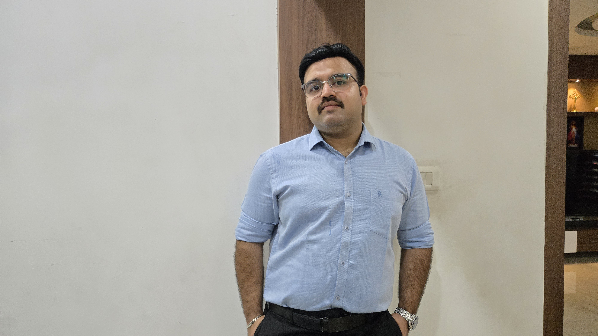

About Me
Hello, I am a God-fearing, simple, and family-oriented person from Kochi. I am marriage-oriented, looking to settle down, and open to relocating abroad. I had undergone hair fixing, which I am comfortable sharing openly.
Primary Information
Age, DOB & Height 30 | 10/02/1996 | 165 Cm
Religion Christian, Syrian Catholic
Parish St. Francis Assisi Church, Kakkanad (Ernakulam-Angamaly Archdiocese)
Mother Tongue Malayalam
Location Kakkanad, Ernakulam, Kerala
Education & Career
Education B.Tech in Computer Science Engineering (SCMS), PG Diploma in Project Management from Canada
Profession Sales & Marketing Executive at Amazing Rubbers Pvt Limited, CSEZ Kakkanad
Additional Roles Part-Time Cloud & DevOps Trainee at AkumenbyQ (Remote) working towards re-entering the IT field
Income 4 To 5 Lakh annually
Family Details
I come from an Upper Middle Class, well-respected family.
- Father: Shaju N.T (Proprietor of Global Jewellers, Ernakulam)
- Mother: Ligi Shaju (Homemaker)
- Sibling: One younger brother, Edwin Shaju (10th standard at Naipunnya Public School)
Hobbies & Interests
Interests Bike / Car Enthusiast, Blogging, Going On Long Drives, Volunteer Work
Sports/Games Cricket, Badminton, Cycling, Gym / Bodybuilding
Food Non-Vegetarian (Arabic, Chinese, Continental, South Indian)
Movies & Music Comedy, Romantic, Action | Melodies, Rock, Christian / Gospel
Partner Preferences
- Age & Height: 23 Yrs - 28 Yrs | 150 Cm - 165 Cm
- Denomination: Syrian Catholic, Latin Catholic, Malankara Catholic, Jacobite, Marthomite, Orthodox
- Expectations: Looking for someone respectful, emotionally available, educated, and employed. Candidates willing to relocate abroad together to build a family and pursue their career are warmly welcomed.
Photo Gallery
